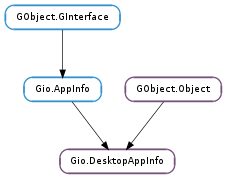

| static | new(desktop_id) |
| static | new_from_filename(filename) |
| static | new_from_keyfile(key_file) |
| static | set_desktop_env(desktop_env) |
| get_boolean(key) | |
| get_categories() | |
| get_filename() | |
| get_generic_name() | |
| get_is_hidden() | |
| get_keywords() | |
| get_nodisplay() | |
| get_show_in(desktop_env) | |
| get_startup_wm_class() | |
| get_string(key) | |
| has_key(key) | |
| launch_uris_as_manager(uris, launch_context, spawn_flags, user_setup, user_setup_data, pid_callback, *pid_callback_data) |
| Name | Type | Flags | Description |
|---|---|---|---|
| filename | str | r/w/c |
None
Bases: GObject.Object, Gio.AppInfo
Gio.DesktopAppInfo is an implementation of Gio.AppInfo based on desktop files.
Note that <gio/gdesktopappinfo.h> belongs to the UNIX-specific GIO interfaces, thus you have to use the gio-unix-2.0.pc pkg-config file when using it.
| Parameters: | desktop_id (str) – the desktop file id |
|---|---|
| Returns: | a new Gio.DesktopAppInfo, or None if no desktop file with that id |
| Return type: | Gio.DesktopAppInfo |
Creates a new Gio.DesktopAppInfo based on a desktop file id.
A desktop file id is the basename of the desktop file, including the .desktop extension. GIO is looking for a desktop file with this name in the applications subdirectories of the XDG data directories (i.e. the directories specified in the XDG_DATA_HOME and XDG_DATA_DIRS environment variables). GIO also supports the prefix-to-subdirectory mapping that is described in the Menu Spec (i.e. a desktop id of kde-foo.desktop will match /usr/share/applications/kde/foo.desktop).
| Parameters: | filename (str) – the path of a desktop file, in the GLib filename encoding |
|---|---|
| Returns: | a new Gio.DesktopAppInfo or None on error. |
| Return type: | Gio.DesktopAppInfo |
Creates a new Gio.DesktopAppInfo.
| Parameters: | key_file (GLib.KeyFile) – an opened GLib.KeyFile |
|---|---|
| Returns: | a new Gio.DesktopAppInfo or None on error. |
| Return type: | Gio.DesktopAppInfo |
Creates a new Gio.DesktopAppInfo.
| Parameters: | desktop_env (str) – a string specifying what desktop this is |
|---|
Sets the name of the desktop that the application is running in. This is used by Gio.AppInfo.should_show () and Gio.DesktopAppInfo.get_show_in () to evaluate the OnlyShowIn and NotShowIn desktop entry fields.
The Desktop Menu specification recognizes the following:
GNOME KDE ROX XFCE LXDE Unity Old
Should be called only once; subsequent calls are ignored.
| Parameters: | key (str) – the key to look up |
|---|---|
| Returns: | the boolean value, or False if the key is not found |
| Return type: | bool |
Looks up a boolean value in the keyfile backing info.
The key is looked up in the “Desktop Entry” group.
| Returns: | The unparsed Categories key from the desktop file; i.e. no attempt is made to split it by ‘;’ or validate it. |
|---|---|
| Return type: | str |
Gets the categories from the desktop file.
| Returns: | The full path to the file for info, or None if not known. |
|---|---|
| Return type: | str |
When info was created from a known filename, return it. In some situations such as the Gio.DesktopAppInfo returned from Gio.DesktopAppInfo.new_from_keyfile (), this function will return None.
| Returns: | The value of the GenericName key |
|---|---|
| Return type: | str |
Gets the generic name from the destkop file.
| Returns: | True if hidden, False otherwise. |
|---|---|
| Return type: | bool |
A desktop file is hidden if the Hidden key in it is set to True.
| Returns: | The value of the Keywords key |
|---|---|
| Return type: | [str] |
Gets the keywords from the desktop file.
| Returns: | The value of the NoDisplay key |
|---|---|
| Return type: | bool |
Gets the value of the NoDisplay key, which helps determine if the application info should be shown in menus. See GLib.KEY_FILE_DESKTOP_KEY_NO_DISPLAY and Gio.AppInfo.should_show ().
| Parameters: | desktop_env (str) – a string specifying a desktop name |
|---|---|
| Returns: | True if the info should be shown in desktop_env according to the OnlyShowIn and NotShowIn keys, False otherwise. |
| Return type: | bool |
Checks if the application info should be shown in menus that list available applications for a specific name of the desktop, based on the OnlyShowIn and NotShowIn keys.
If desktop_env is None, then the name of the desktop set with Gio.DesktopAppInfo.set_desktop_env () is used.
Note that Gio.AppInfo.should_show () for info will include this check (with None for desktop_env ) as well as additional checks.
| Returns: | the startup WM class, or None if none is set in the desktop file. |
|---|---|
| Return type: | str |
Retrieves the StartupWMClass field from info. This represents the WM_CLASS property of the main window of the application, if launched through info.
| Parameters: | key (str) – the key to look up |
|---|---|
| Returns: | a newly allocated string, or None if the key is not found |
| Return type: | str |
Looks up a string value in the keyfile backing info.
The key is looked up in the “Desktop Entry” group.
| Parameters: | key (str) – the key to look up |
|---|---|
| Returns: | True if the key exists |
| Return type: | bool |
Returns whether key exists in the “Desktop Entry” group of the keyfile backing info.
| Parameters: |
|
|---|---|
| Raises: | |
| Returns: | |
| Return type: |
This function performs the equivalent of Gio.AppInfo.launch_uris (), but is intended primarily for operating system components that launch applications. Ordinary applications should use Gio.AppInfo.launch_uris ().
In contrast to Gio.AppInfo.launch_uris (), all processes created will always be run directly as children as if by the UNIX fork()/exec() calls.
This guarantee allows additional control over the exact environment of the child processes, which is provided via a setup function user_setup, as well as the process identifier of each child process via pid_callback. See GLib.spawn_async () for more information about the semantics of the user_setup function.